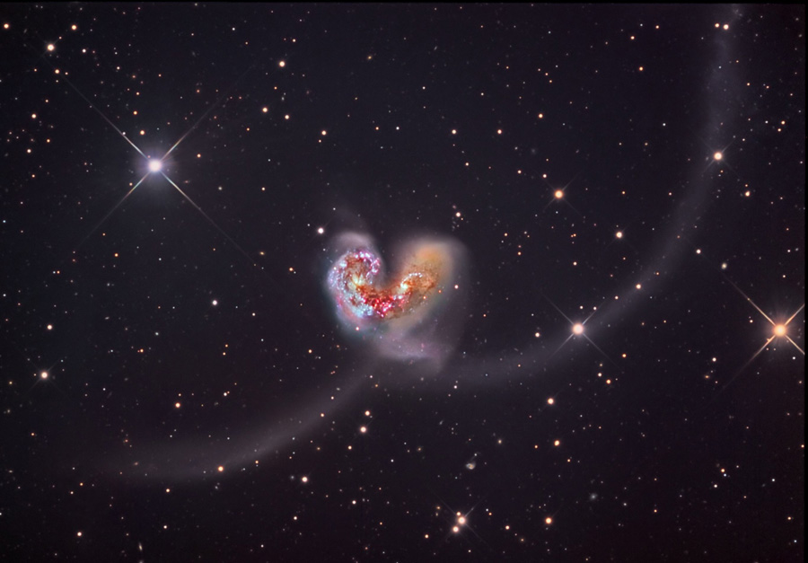

História da astronomia
A Astronomia é a ciência mais antiga da humanidade. Desde os tempos antigos, quando nossos ancestrais usavam os astros para saber a hora de plantar e colher, até a era moderna dos telescópios espaciais, o universo nunca deixou de nos fascinar. A palavra Astronomia vem do grego antigo e surge da junção de dois termos: astron, que significa "estrela" ou "corpo celeste", e nomos, que significa "lei" ou "regra". Ou seja, em sua origem, a Astronomia é literalmente "a lei das estrelas"— a ciência dedicada a estudar as regras que regem os planetas, galáxias, cometas e tudo o que habita o universo.
NASA
Se você gosta de exploração espacial, com certeza já ouviu o nome Nasa (National Aeronautics and Space Administration). Criada em 1958 pelos Estados Unidos durante a famosa "Corrida Espacial" com a União Soviética, a agência nasceu com o objetivo de dominar os céus e expandir as fronteiras do conhecimento humano. De lá para cá, a NASA protagonizou momentos que mudaram a história para sempre — como levar o primeiro homem à Lua com a missão Apollo 11, em 1969
